O ser humano em comunidade. Desde que apareceu, o ser humano sempre viveu em sociedade — da família à tribo, da aldeia à pólis, do império ao Estado moderno.
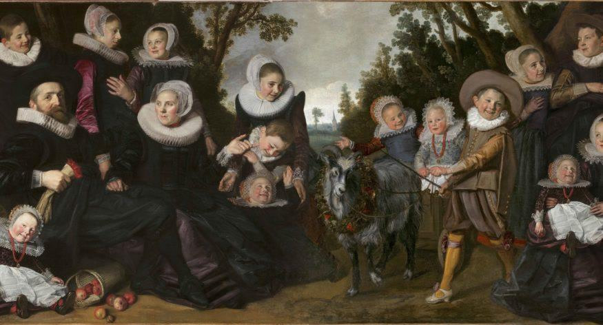
Desde que apareceu, o ser humano sempre viveu em sociedade. Crianças ferais, como Dina Sanichar, o "menino lobo" de Sikandra, demonstram que, privadas da convivência humana, sofrem graves problemas de desenvolvimento psíquico e linguístico.
A sociedade básica é a família estendida, depois a tribo e depois sociedades maiores.
O "menino lobo" de Sikandra, Dina Sanichar, na idade adulta (ca. 1889-1894), Rijksmuseum, Amsterdam.
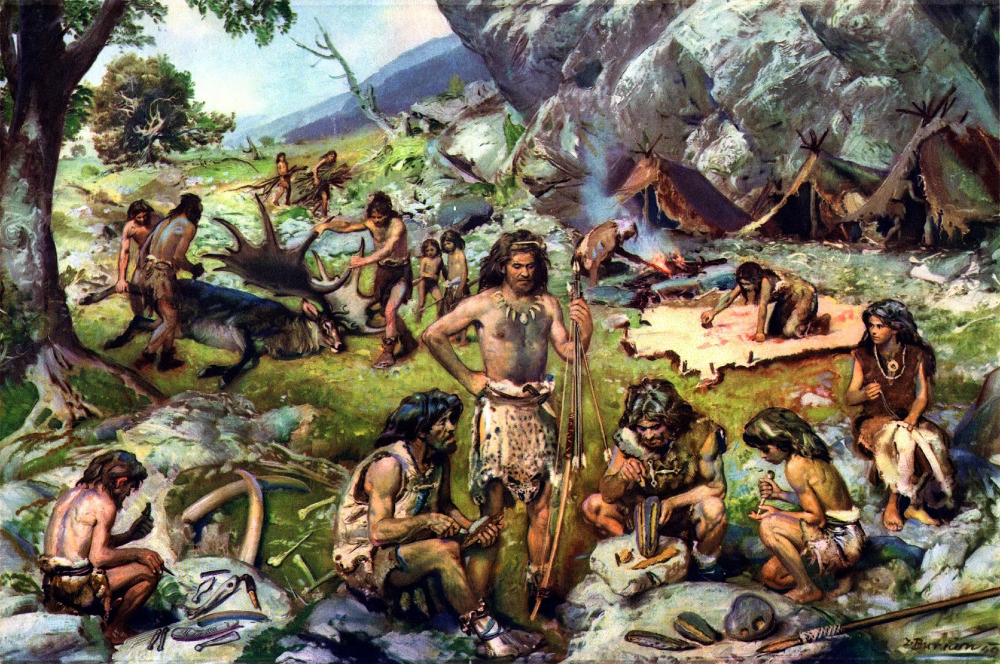
A Família Van Campen numa paisagem, Frans Hals e Salomon de Bray, 1624, reconstrução proposta a partir de três pedaços espalhados em diversos museus. A família como célula primeira da sociedade.
O homem é por natureza um animal político, zoon politikon.
Aristóteles, Política, I, 1253a
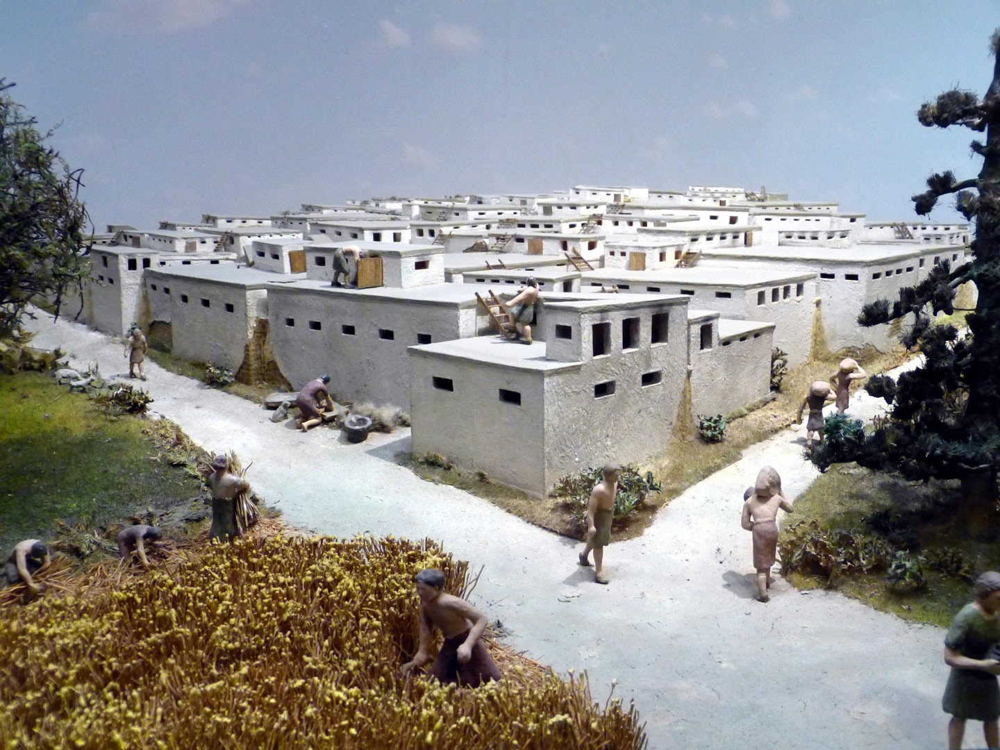
Acampamento de caçadores-coletores paleolíticos, pintura de Zdenek Burian para o livro Prehistoric Man, de 1960. A forma da vida social passa da família para grupos maiores -- tribo, vilarejo, cidade e nação.
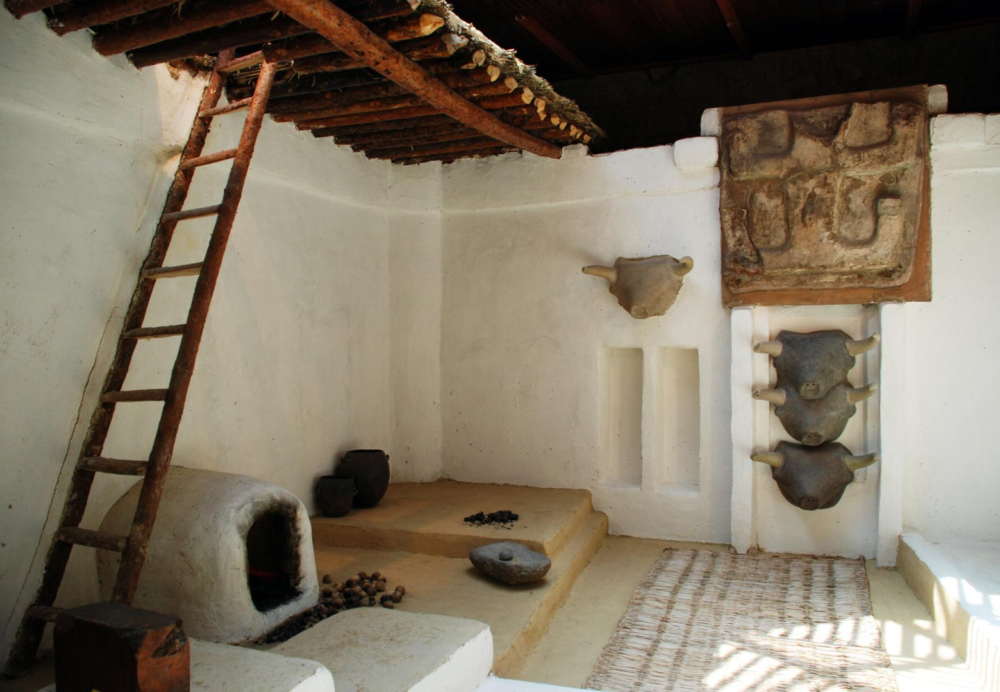
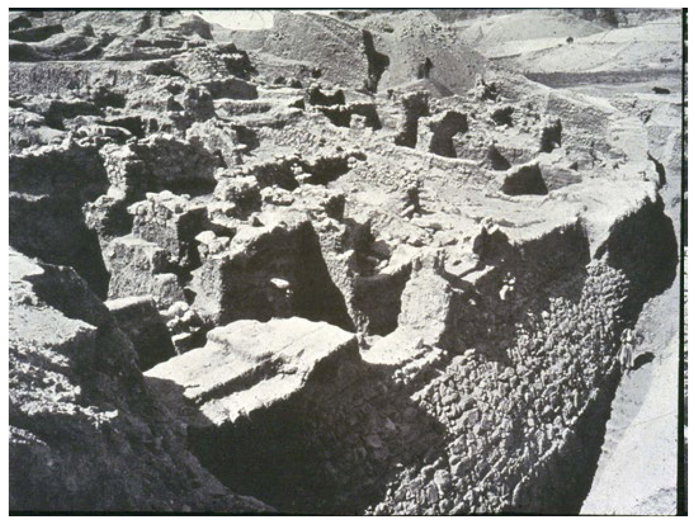
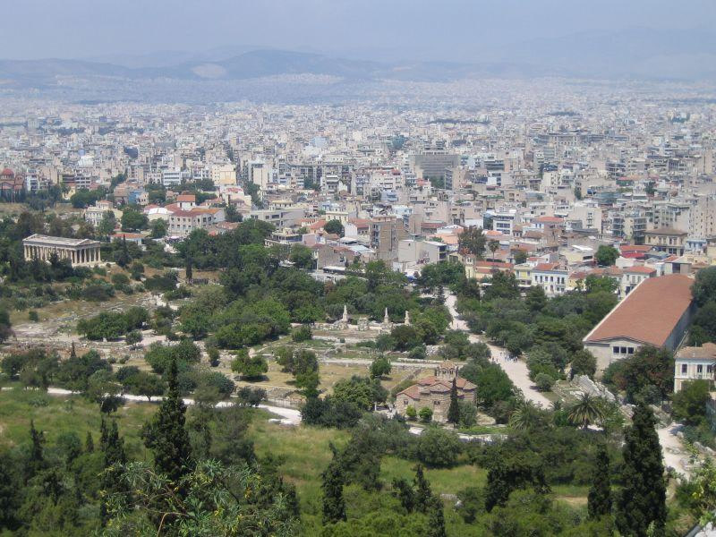
Casas de tijolos de barro construídas junto à muralha externa de Jericó, ca. 9000-8000 a.C., foto das escavações de Sellin e Watzinger, 1911. Todas as sociedades exigem algum tipo de legislação (costumes, lei formal) e de governo.
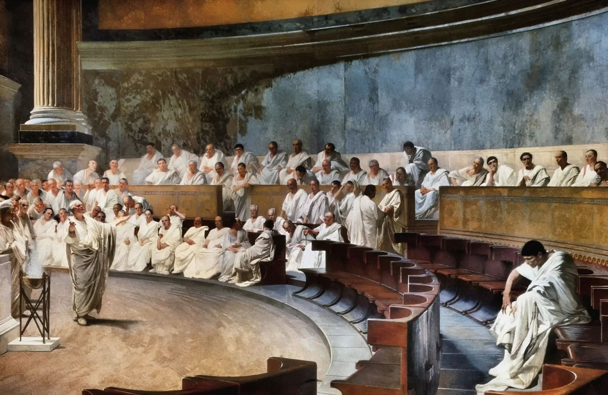
A antiga Ágora de Atenas, entre o Templo de Hefesto e a Stoa de Attalo reconstruída. Aristóteles (384-322 a.C.) estabeleceu o fundamento: o homem é zoon politikon. A pólis não era uma "cidade-estado", mas uma comunidade espiritual e ética natural.
Aristóteles hierarquiza as sociedades em oikos (casa), kóme (aldeia) e pólis (cidade). A pólis justa seria aquela onde cada classe executa a sua função própria sem interferir nas outras.
A pólis grega era uma comunidade cujo fim era a vida boa, a eudaimonia ou "vida espiritual", virtuosa. Sua essência não era territorial, mas o corpo de cidadãos em unidade.
Platão (428-348 a.C.) propôs uma analogia entre a psiqué e a polis: a cidade ideal seria regida por guardiões-filósofos (sabedoria), auxiliares-guerreiros (coragem) e artesãos-trabalhadores (temperança).
Cícero (106-43 a.C.) acrescentou a definição canônica de populus: "assembleia de pessoas associadas no respeito à justiça e parceria para o bem comum". A res publica é a res populi, a "coisa do povo".
A Roma imperial operou uma mudança profunda: da pólis baseada no parentesco e cultura comum para uma concepção legalista (civitas, cidadania). A raiz socius implica aliança contratual, não participação orgânica.
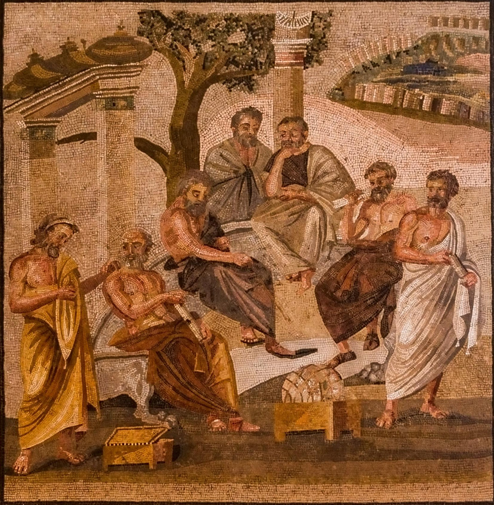
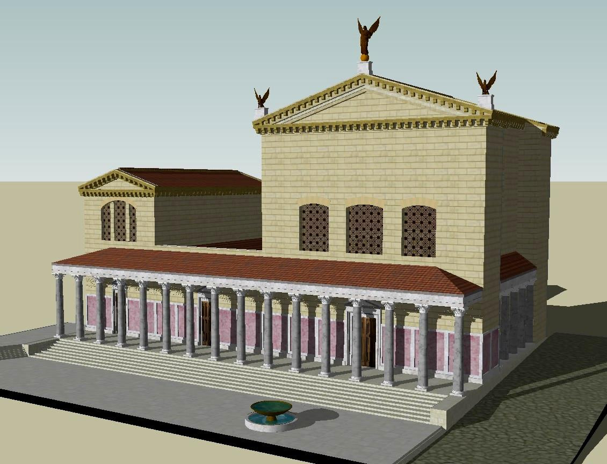
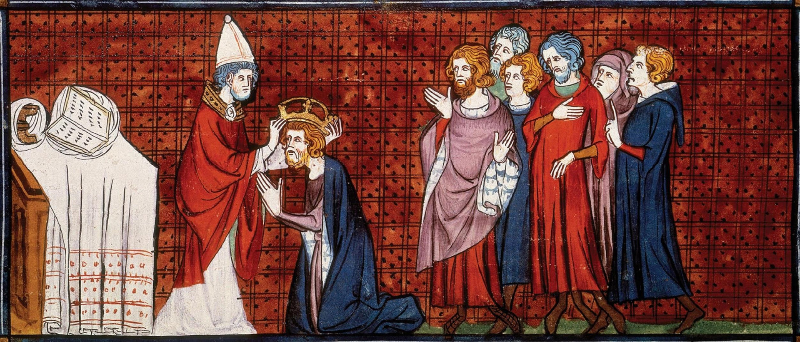
Reconstituição da Cúria Júlia, Roma, derivada de um modelo em 3D de Lasha Tskhondia. O Senado romano era o centro do governo republicano, onde os senadores deliberavam sobre a res publica.
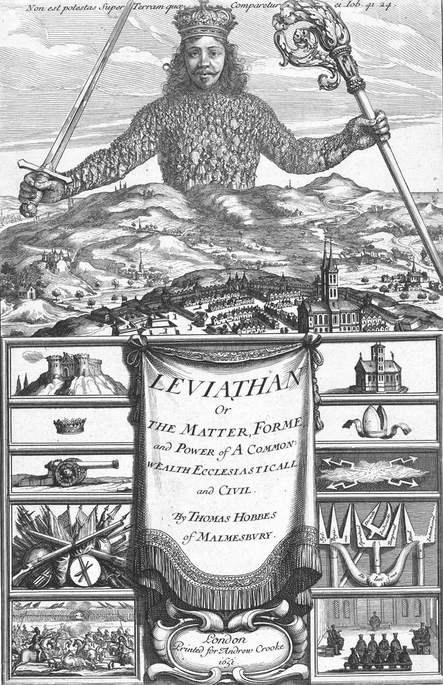
Carlos Magno é coroado o primeiro Imperador do Sacro Império Romano de Nação Germânica pelo Papa Leão III no Natal do ano 800 d.C. Iluminura das Chroniques de France ou de Saint-Denis, séc. XIV.
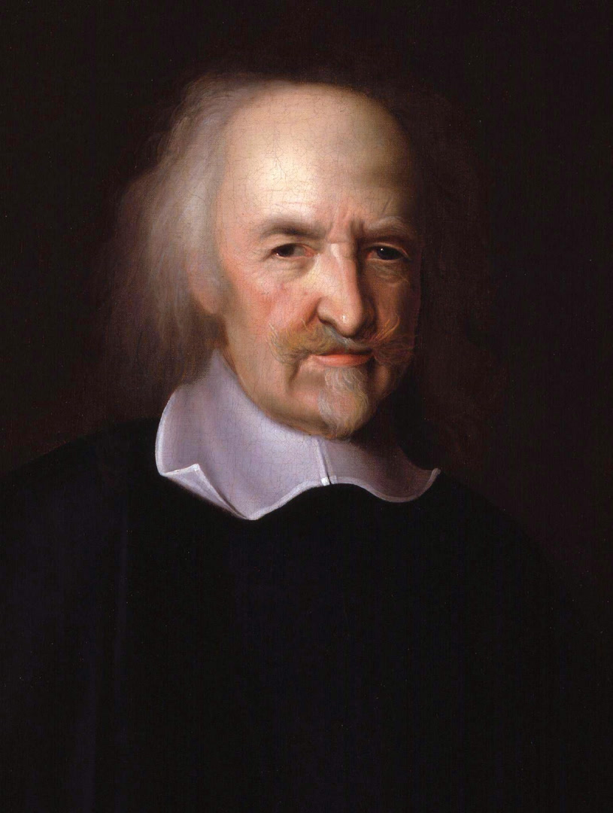
Cristandade, de Andrea di Bonaiuto, detalhe da Alegoria da Igreja ativa e triunfante e da Ordem Dominicana, ca. 1365-67, Capela dos Espanhóis, Santa Maria Novella, Florença.
Santo Agostinho (354-430) distingue a Cidade de Deus e a Cidade dos Homens. A sociedade terrena seria um mal necessário, mantida pela coerção legal.
São Tomás de Aquino (1225-1274) reabilitou a dignidade da ordem política: as estruturas de governo são naturais, não apenas resultados do pecado original. "Naturale autem est homini ut sit animal sociale et politicum."
São Tomás de Aquino descreve uma hierarquia que fundamenta a ordem social cristã.
O governo racional de Deus sobre o Universo, fonte de toda lei e ordem.
Pode ser discernida pela razão humana e funda os princípios éticos universais.
A Revelação contida nas Sagradas Escrituras, que orienta o homem para o fim sobrenatural.
As leis feitas pelos homens, que devem estar em conformidade com a lei natural e orientadas ao bem comum.
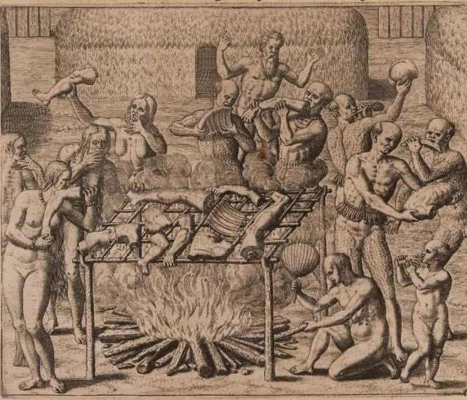
Thomas Hobbes (1588-1679) rejeita a sociedade natural aristotélica. O "estado de natureza" seria a "guerra de todos contra todos". Só o Estado -- o Leviatã -- asseguraria a existência da sociedade civil.
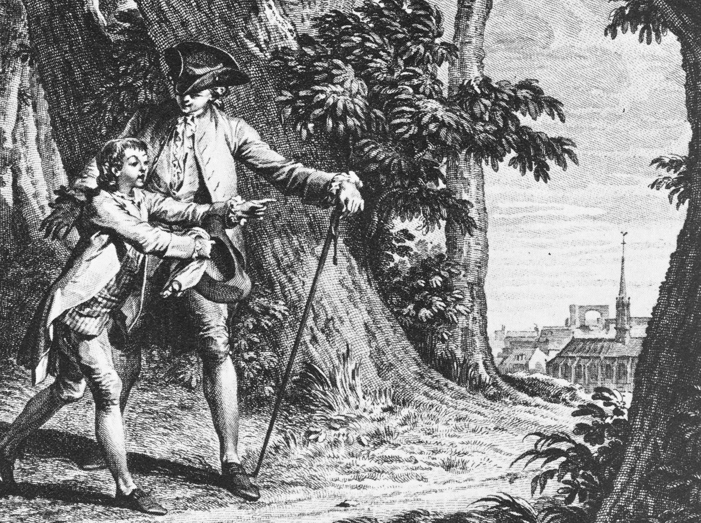
John Locke (1632-1704) inverte o raciocínio: o "estado de natureza" seria a paz governada pela lei natural. O homem teria direitos naturais: à vida, à liberdade, à propriedade privada. Se um governo se dissolve, a sociedade permanece.
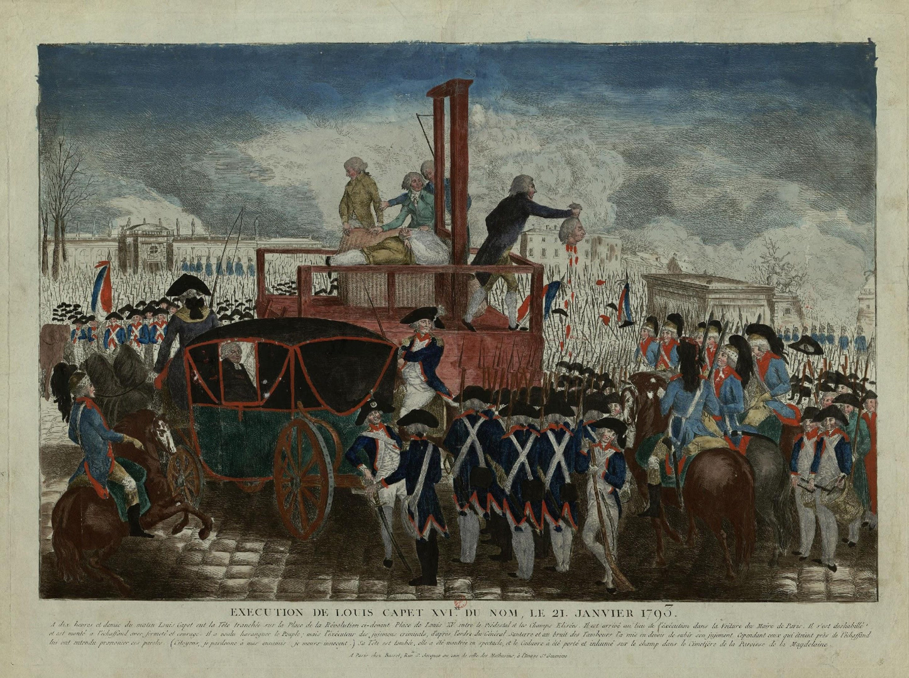
Jean-Jacques Rousseau (1712-1778) considera o "estado de natureza" como de inocência bondosa. A sociedade seria formada por um "contrato social", pelo qual cada indivíduo alienaria todos os direitos para a comunidade, criando uma Vontade Geral.
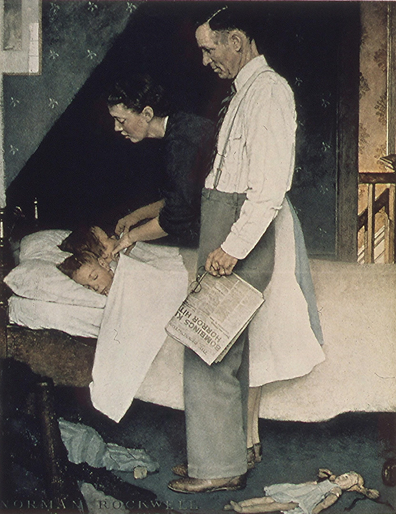
Execução de Luís Capeto, XVI do nome, no dia 21 de janeiro de 1793, anônimo, BnF Gallica. A Revolução Francesa levou às últimas consequências o ideal do contrato social e da soberania popular.
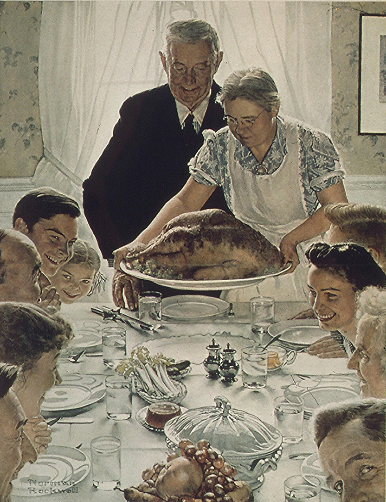
As Quatro Liberdades de Norman Rockwell, ca. 1941-45: Liberdade do medo, Liberdade da necessidade, Liberdade de expressão e Liberdade de culto -- base do modo de vida americano.
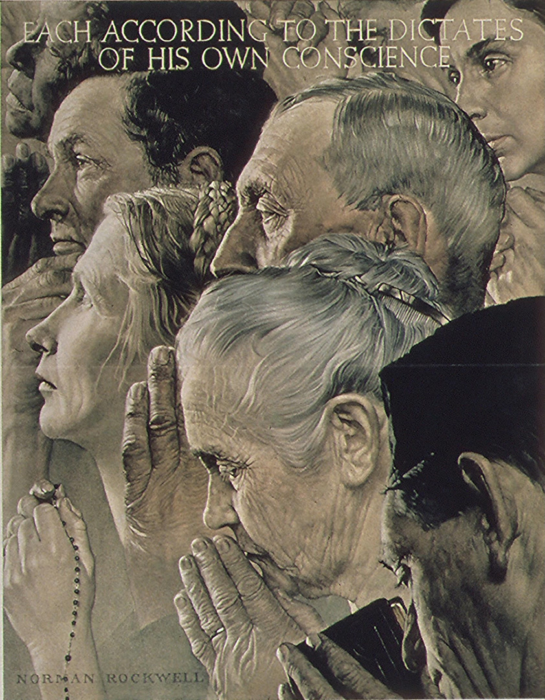
Hegel (1770-1831) canoniza a distinção entre sociedade civil e Estado. Na "Dialética dos costumes": Família (unidade imediata) x Sociedade Civil (reino da diferença) x Estado (unidade racional transcendente).
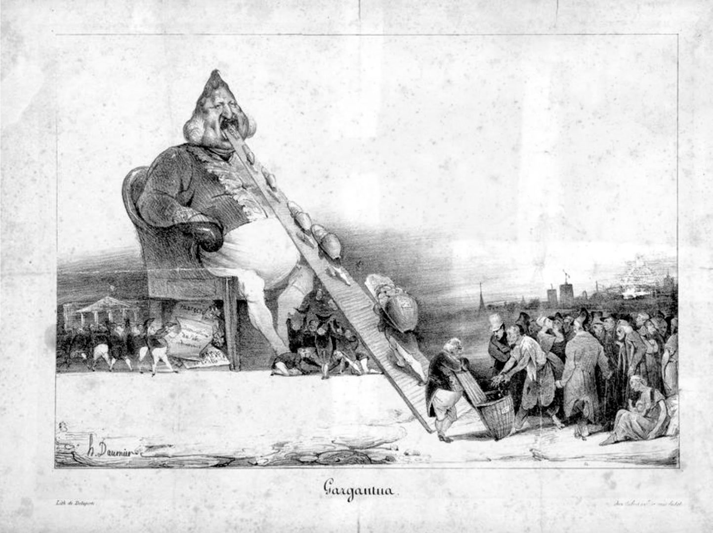
Karl Marx (1818-1883) inverte Hegel: a sociedade burguesa e a economia são os verdadeiros determinantes, não o Estado. Tudo -- Estado, sistema legal, governo, religião, cultura -- seria mera superestrutura destinada a mascarar a opressão.
Os "cidadãos" da Revolução Francesa seriam todos iguais em teoria, mas na realidade se dividiriam em burgueses (donos dos meios de produção) e proletários (assalariados, explorados).
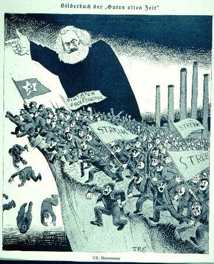
Michel Foucault (1926-1984) leva adiante a "filosofia da suspeita" de Marx: o Estado moderno está obcecado com a gestão biológica da população. Isso levaria ao racismo de Estado e à justificação da morte dos considerados "anormais".
Hannah Arendt (1906-1975) aponta a "ascensão do social": ao invés de defender a sociedade, o "Estado" chama a si preocupações próprias da esfera privada -- trabalho, consumo, economia, defesa de causas ideológicas.
Jürgen Habermas (1929-) diagnostica uma "refeudalização da esfera pública": partidos e grupos ideológicos capturam toda a burocracia estatal. A política transforma-se da "vida boa" aristotélica na "gestão da vida" foucaultiana.
Alegoria do Bom Governo, Ambrogio Lorenzetti, 1338-39, Palazzo Pubblico, Sala della Pace, Siena. Ao lado do governante estão as virtudes da Paz, Fortaleza e Prudência à esquerda, e da Magnanimidade, Temperança e Justiça à direita.
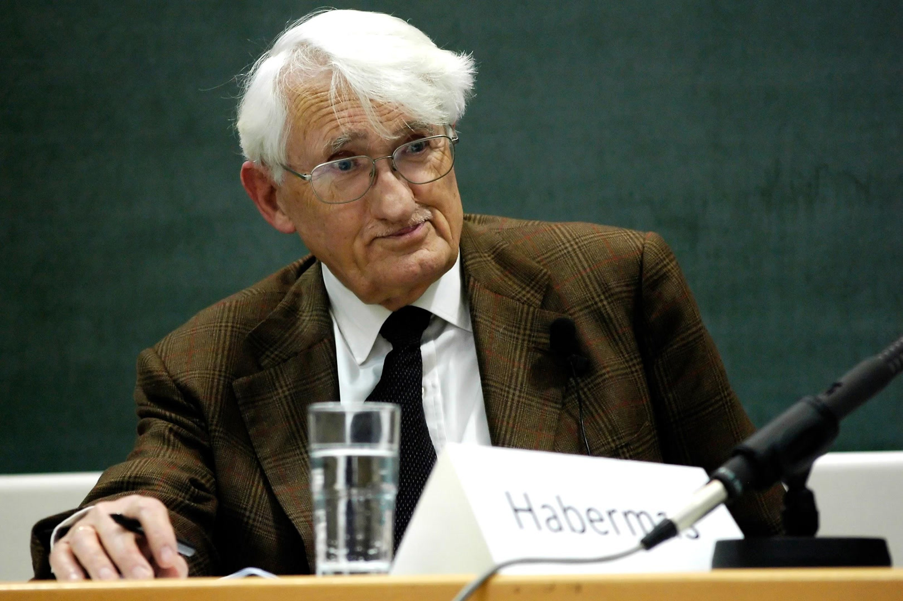
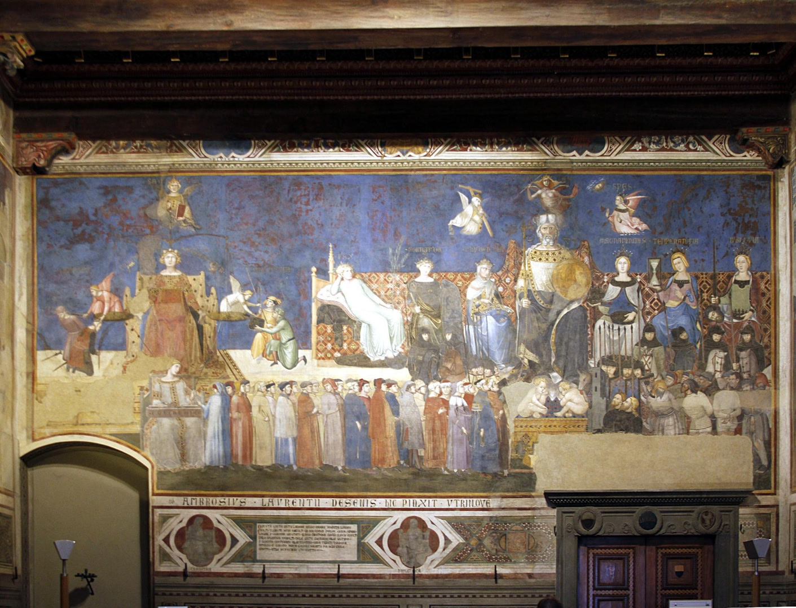
As grandes ideias sobre a sociedade ao longo da história.
Vida em sociedade é a forma natural de vida de todo ser humano. Estamos feitos para isso.
A forma da vida social passa da família para grupos maiores -- tribo, vilarejo, cidade e nação. Todas as sociedades exigem algum tipo de legislação e de governo.
Todas as sociedades antigas enxergam-se como realidades sagradas. A Cristandade medieval separou os âmbitos de governo, distinguindo entre poder espiritual e poder temporal.
No início da modernidade nasce o ideal de construir a sociedade perfeita. O conceito do contrato social transforma a sociedade em algo que pode ser moldado pela vontade dos participantes.
A ficção moderna do Estado levou a uma crescente invasão do governo na vida privada, levando aos totalitarismos modernos. A política transforma-se da "vida boa" (eudemonia) aristotélica na "gestão da vida" foucaultiana.
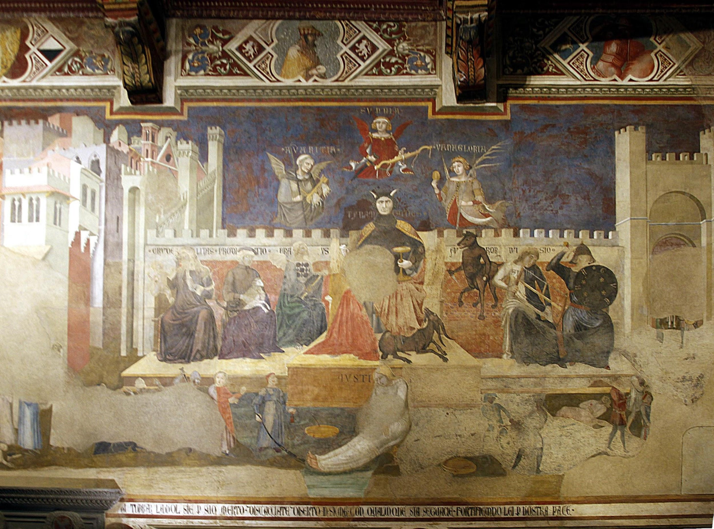
Na cidade pacífica, cada cidadão persegue os seus afazeres num clima de paz e prosperidade -- o fim natural de toda sociedade bem governada.
A cidade: comunidade espiritual e ética cuja finalidade é a eudaimonia — a vida boa e virtuosa dos cidadãos.
Reunião de famílias com parentesco entre si, já assentadas num território definido.
Agrupamento de várias famílias com laços de sangue. Forma predominante durante todo o Paleolítico.
A família estendida: célula primeira da sociedade, ambiente onde o ser humano recebe formação em todas as dimensões.
O estado de natureza é a guerra de todos contra todos. O homem é o lobo do homem. Só um governo forte — o Leviatã — pode impor a paz.
Bellum omnium contra omnes — a vida seria solitária, pobre, brutal e curta.
O estado de natureza é de paz e liberdade. O homem possui direitos naturais — à vida, à liberdade, à propriedade. O governo é dispensável; a sociedade, não.
Se o governo é injusto, pode ser dissolvido. A sociedade permanece.
O homem nasce bom e a sociedade o corrompe. O ideal seria o retorno ao estado de natureza — o mito do bom selvagem, inspirado nos tupinambás.
L'homme est né libre, et partout il est dans les fers.
Unidade imediata baseada no vínculo afetivo e no sangue. Representa a identidade e a coesão do grupo primordial.
Reino da diferença econômica e social. Necessária para a liberdade individual, mas instável, propensa à pobreza e ao excesso.
Entidade pseudo-transcendente que reúne a diversidade na unidade. Tende a tornar-se um corpo parasitário que existe para os seus próprios fins.
| Aspecto | Foucault | Arendt | Habermas |
|---|---|---|---|
| Diagnóstico | Sociedade como panóptico — vigilância total e controle biopolítico de todos os aspectos da vida | Ascensão do social — o Estado assume preocupações da esfera privada (trabalho, consumo, felicidade) | Refeudalização — partidos e grupos ideológicos colonizam toda a burocracia estatal |
| Mecanismo | O Estado penetra a sociedade civil de cima para baixo | O social penetra o Estado de baixo para cima | A burocracia partidária substitui o governo eleito como centro de poder real |
| Resultado | Cultura do ressentimento — identidade reduzida a caracteres externos, "cultura woke" | Banalidade do mal — Eichmann cumpria "seu dever"; mediocridade como motor da opressão | Estado partidário — convergência entre democracias liberais e regimes totalitários |
| Consequência | Indivíduo solitário perante um Estado que controla tudo — contas, censos, identidade | O Estado pretende tornar todos felizes — pretensão absurda que gera mais controle | A diferença entre democracias e totalitarismos torna-se cada vez menor |
A sociedade existe para a pessoa, nunca o contrário. A pessoa é sempre fim, nunca meio.
Decisões e impostos devem ficar o mais perto possível de quem os experimenta: município antes do Estado, Estado antes da União.
Cada cidadão contribui para os que conhece e que fazem parte da sua comunidade concreta, não para um bem comum abstrato.
Nenhuma forma de governo — monarquia, república, democracia — funciona bem se estão ausentes as virtudes pessoais. A questão não é o sistema, mas a qualidade moral de quem governa e de quem é governado.